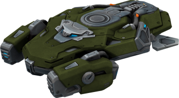
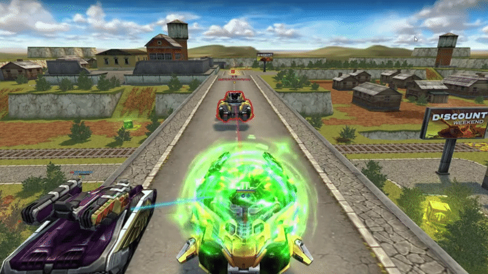
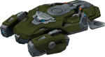
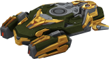

概括
游戏中的中型驾驶底盘和悬停底盘之一。它可以横向移动，其控件专为玩移动版而设计。
过速装置会激活一个偏振器，治疗一定范围内的所有团队成员，并使他们免疫敌人的状态效果。
范围内的敌方坦克会收到状态效果“弱点 (AP)”和“干扰器”。
这使得这种底盘特别适合支持攻击。
车库中的描述
中型底盘。它悬停在地面上，可以在任何表面上毫无困难地移动。
它的过速装置应用在坦克周围的范围内，使坦克的装甲极化。
附近的友军免疫某些状态效果并持续受到治疗，而敌人则应用负面状态效果。
«圣骑士» 悬停坦克是作为支援坦克而创建的，以协助突击小组，保持小组的速度是必不可少的。
圣骑士拥有中型装甲并使用第二代反重力引擎，使其具有所需的速度。
它发挥辅助作用的方式是激活它的偏光片。
这种效果会持续很长时间，并且看起来像坦克周围的光环，可以为装甲充电
（根据一些坦克操作员的说法，水瓶也是如此），具有积极的效果。
极化盔甲可以为敌人使用的非凡武器提供更大的抵抗力，让你的攻击免于很多麻烦。
根据目击者的说法，极化水可以防止在水箱内受伤的奇异方式。
我们不完全确定这些玩家正在谈论什么样的奇异伤害方法。
装备改造

过速装置
支持偏振器

皮肤

圣骑士标准

圣骑士 XT